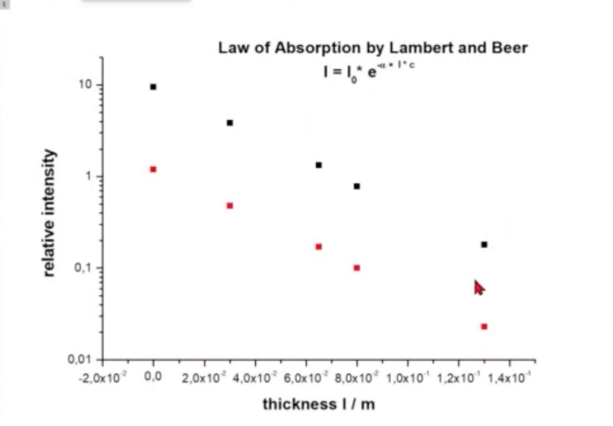

28 Dispersion & Absorption
When light interacts with matter, its electric field \(\vec{E}(\vec{r},t)\) influences the charged particles within atoms. For visible light (\(\lambda \approx 500\, \text{nm}\)) interacting with atoms (size \(\approx 0.1\, \text{nm}\)), we can make two important approximations:
Dipole Approximation: Since \(\lambda \gg a\) (atomic size), the field appears uniform across each atom: \[\vec{E}(\vec{r},t) \approx \vec{E}(t)\]
Local Field Approximation: The field acting on each atom is approximately the macroscopic field: \[\vec{E}_\text{local} \approx \vec{E}\]
For a linearly polarized wave along the x-direction: \[\vec{E}(t)=E_0\hat{x} e^{-i\omega t}\]
For isotropic media, the dipole moment \(\vec{p}\) of an atom is proportional to the local electric field:
\[\vec{p}=\alpha\vec{E}\]
The equation of motion for the electron displacement vector follows: \[ \ddot{\vec{r}}+\sigma\dot{\vec{r}}+\omega_0\vec{r}=\frac{q}{m}\vec{E}(t) \]
For the x-component, we can write: \[ \ddot{x}+\sigma\dot{x}+\omega_0x=\frac{q}{m}E_x(t) \]
The solution has the form: \[ x(t)=x_0 e^{i\omega t} \]
This leads to: \[ \vec{r}(t)=\frac{1}{\omega_0^2+i\omega\sigma-\omega^2}\frac{q}{m}\vec{E}(t) \]
The oscillating dipole moment becomes \(\vec{p}=q\vec{r}(t)=\alpha\vec{E}(t)\), and the polarization density: \[ \vec{P}=Nq\frac{1}{\omega_0^2+i\omega\sigma-\omega^2}\frac{q}{m}\vec{E}(t)=\epsilon_0\chi\vec{E}(t) \]
From this, we obtain the electronic susceptibility:
\[ \chi=\chi_0\frac{1}{\omega_0^2+i\omega\sigma-\omega^2} \]
with
\[ \chi_0=\frac{q^2N}{m\epsilon_0} \]
The susceptibility is complex, written as \(\chi=\chi^{'}+i\chi^{"}\), making both the dielectric function \(\epsilon_r=1+\chi\) and refractive index complex quantities.
The complex refractive index takes the form:
\[ n=n_r-i\kappa=\sqrt{\epsilon_r}=\sqrt{1+\chi} \]
where the negative sign convention for the imaginary part is standard but not universal. Explicitly:
\[ n=1+\frac{Nq^2}{2\epsilon_0 m}\frac{(\omega_0^2-\omega^2)-i\sigma\omega}{(\omega_0^2-\omega^2)^2+\omega^2\sigma^2}=n_r-i\kappa \]
These real and imaginary components, \(n_r\) and \(\kappa\), significantly affect light propagation. The two components can be written as
\[n_r = 1 + A\frac{(\omega_0^2-\omega^2)}{(\omega_0^2-\omega^2)^2+\omega^2\sigma^2}\]
and
\[\kappa = A\frac{\sigma\omega}{(\omega_0^2-\omega^2)^2+\omega^2\sigma^2}\]
with \(A=\frac{Nq^2}{2\epsilon_0 m}\).
The plots show how both components vary with frequency due to the atomic resonance. Near resonance, the real part exhibits strong dispersion, transitioning from values above 1 to below 1. The imaginary part shows a Lorentzian peak with width determined by the damping coefficient \(\sigma\).
Measuring Refractive Index
A simple way to measure the refractive index is through the critical angle principle. By measuring the critical angle at which total internal reflection occurs, one can determine the refractive index of a material. This technique is widely used in refractometers and optical sensors.


28.1 Absorption
Important
The imaginary component of the refractive index leads to the Lambert-Beer Law, a fundamental principle in optics and spectroscopy.
The imaginary component \(\kappa\) determines wave attenuation. For a plane wave propagating in the z-direction, the electric field is:
\[ \vec{E}(z,t) = E_0\hat{x}e^{i(kz-\omega t)} \]
The spatial part follows:
\[ \vec{E}(z)=E_0\hat{x}e^{-ik z}=E_0\hat{x}e^{-in k_0 z} \]
Including the complex refractive index:
\[ \vec{E}(z)=E_0\hat{x}e^{-i(n-i\kappa) k_0 z} =E_0\hat{x} e^{-i n_r k_0 z}e^{-\kappa k_0 z} \]
The exponential decay factor modifies the wave amplitude with distance.
The intensity, which is proportional to the time-averaged Poynting vector magnitude, follows:
\[\begin{align} I &= \frac{1}{2}\epsilon_0 c|\vec{E}|^2 \\ &= \frac{1}{2}\epsilon_0 c |E_0|^2 \left | e^{-in_r k_0 z }e^{-\kappa k_0 z} \right |^2\\ &= I_0 e^{-2\kappa k_0 z} \\ &= I_0 e^{-\alpha z} \end{align}\]
where \(\alpha=2k_0\kappa = \frac{4\pi\kappa}{\lambda}\) represents the absorption coefficient. This exponential decay of intensity with distance is known as the Lambert-Beer Law:
\[ \frac{I}{I_0}= e^{-\alpha z} \tag{Lambert Beer Law} \]


The frequency-dependent absorption reflects resonant behavior, with strong absorption near resonance and weak absorption elsewhere. Real materials typically have multiple resonances, creating complex absorption spectra that serve as unique chemical fingerprints.
Absorption Measurements
The measurement of absorption is fundamental to many fields including chemistry, materials science, and biological studies. The basic principle relies on the Lambert-Beer Law:
\[\ln\left(\frac{I}{I_0}\right) = -\alpha(\lambda)L = -\epsilon(\lambda)cL\]
where:
- \(I/I_0\) is the transmittance
- \(\alpha(\lambda)\) is the absorption coefficient
- \(\epsilon(\lambda)\) is the molar extinction coefficient
- \(c\) is the molar concentration
- \(L\) is the path length
The above logarithm can be used to define the absorbance \(A\) as
\[A = -\ln\left(\frac{I}{I_0}\right)/\ln(10)\]
which is the typical quantity that is plotted against concentration in absorption measurements and linearly depends on the concentration. According to Lambert Beers law, the absorbance is calculated from \[A = \epsilon c L\] and provides the molar extinction coefficient \(\epsilon\) for the material at a given wavelength.

28.1.1 Concentration Measurements
The linear relationship between absorbance and concentration enables quantitative analysis:

Note
The linear range typically extends up to absorbance values of ~1.0 Beyond this, deviation from linearity may occur
28.1.2 Applications
28.1.2.1 1. Chemical Analysis
Chemical analysis provides quantitative information about composition and concentration in solutions. Absorption measurements enable precise determination of concentration levels across many compounds. Reaction kinetics can be monitored in real-time by tracking absorption changes. Quality control in industrial processes relies on rapid and accurate absorption measurements to ensure product consistency.
28.1.2.2 2. Materials Characterization
Optical properties of materials reveal crucial information about their electronic structure and physical properties. Band gap determination helps classify semiconductors and predict their behavior in devices. Film thickness measurements using absorption techniques provide non-destructive ways to characterize thin films and coatings. Understanding these properties is essential for developing new materials and optimizing their performance in applications.
28.1.2.3 3. Biological Studies
Protein quantification through absorption measurements forms a cornerstone of biochemical analysis. DNA and RNA analysis relies on characteristic absorption peaks to determine concentration and purity. Enzyme assays monitor reaction progress through changes in absorption, providing insight into biological processes. These techniques are fundamental to modern biological research and medical diagnostics.
28.2 Dispersion
Note
Dispersion manifests through two key velocities:
- Phase velocity: speed of wave fronts
- Group velocity: speed of wave packets
The frequency dependence of the real refractive index affects wave propagation speeds in two important ways: through the phase velocity and group velocity.
28.2.1 Phase Velocity
The phase velocity represents the speed of wave phase fronts: \[ v=\frac{\omega}{k}=\frac{c}{n_r} \tag{phase velocity} \]
28.2.2 Group Velocity
The group velocity represents the speed of wave packets \[ v_g=\frac{d\omega}{dk} \tag{group velocity} \]

To relate group velocity to the refractive index, we can derive:
\[ v_g=\frac{d}{dk}(v k)=v+k\frac{dv}{dk} \]
Using \(k=k_0 n_r\) and \(v=c/n_r\), and after some algebra, we obtain:
\[ v_g=\frac{c}{n_r+\omega \frac{dn_r}{d\omega}} \tag{group velocity dispersion} \]
The group velocity is distinct from the phase velocity and represents how fast the envelope of a wave packet propagates through space. In a dispersive medium, where the refractive index depends on frequency, the group velocity can differ significantly from the phase velocity. This is particularly important in optical communications where information is carried by wave packets rather than single-frequency waves.

For optical pulses in fibers or other waveguides, group velocity dispersion leads to pulse spreading because different frequency components travel at different speeds. This effect becomes critical in long-distance optical communication systems where pulse broadening can lead to signal distortion and intersymbol interference.
In vacuum or non-dispersive media where the refractive index is constant (\(\frac{dn_r}{d\omega}=0\)), the group velocity equals the phase velocity. However, in most practical situations involving light propagation through materials, dispersion causes these velocities to differ, necessitating careful consideration in optical system design.
28.2.3 Types of Dispersion
The frequency dependence of the refractive index leads to two distinct regimes of dispersion:
- Normal Dispersion: \[ \frac{dn_r}{d\omega}>0 \] In the normal dispersion regime, the refractive index increases with frequency, meaning that higher frequency (blue) light travels more slowly through the medium than lower frequency (red) light. This behavior is commonly observed in transparent materials at frequencies far from their resonances. The effects of normal dispersion are ubiquitous in optics: when white light passes through a prism, it separates into its spectral components creating a rainbow pattern; in optical systems, it causes chromatic aberration where different colors focus at different points; and in optical fibers, it leads to temporal spreading of pulses as different frequency components travel at different speeds through the medium.
Note
Normal dispersion dominates in transparent materials at frequencies well below their resonances. This is why prisms separate white light into its spectral components with blue light bending more than red light.
- Anomalous Dispersion: \[ \frac{dn_r}{d\omega}<0 \] Anomalous dispersion occurs in the vicinity of absorption resonances, where the conventional relationship between frequency and refractive index is reversed. In this regime, higher frequencies propagate faster than lower frequencies, leading to unique optical phenomena. The behavior is characterized by strong frequency-dependent absorption accompanied by rapid variations in the refractive index. This unusual dispersion can even result in negative group velocities under certain conditions. The practical applications of anomalous dispersion are particularly important in modern optics, where it is used for pulse compression in ultrafast laser systems, dispersion compensation in optical communications, and various applications in ultrafast optics.
Important
The transition between normal and anomalous dispersion typically occurs near absorption resonances, where the refractive index varies rapidly with frequency. This behavior is described by the Kramers-Kronig relations, which connect the real and imaginary parts of the refractive index.
Real materials often exhibit both types of dispersion across different frequency ranges, resulting in complex optical behavior. Understanding and controlling these dispersion effects is crucial for the development of optical communication systems, the generation and manipulation of ultrashort pulses, the design of optical components, and the implementation of nonlinear optical processes. The interplay between normal and anomalous dispersion enables sophisticated control over light propagation, essential for modern optical technologies.
28.2.4 Superluminal Group Velocity
The concept of superluminal group velocity emerges in regions of anomalous dispersion, where the group velocity can mathematically exceed the speed of light c. This occurs when: \[ n_r+\omega \frac{dn_r}{d\omega}<1 \]
In our classical oscillator model, this condition is met near the resonance frequency when: \[ |\omega_0-\omega|<\frac{\sigma}{2} \]
This seemingly paradoxical result warrants careful interpretation. The group velocity, while traditionally associated with the speed of energy or information transport, becomes problematic near resonances. Several key points help clarify this phenomenon:
Physical Interpretation: The superluminal effect is associated with pulse reshaping rather than actual faster-than-light signal propagation. The pulse peak appears to emerge from the medium before it would in vacuum due to preferential absorption and dispersion of different frequency components.
Pulse Distortion: Near resonances, pulses undergo severe distortion, making the group velocity less meaningful as a measure of signal propagation. The pulse envelope no longer maintains its shape, and different parts of the pulse travel at different velocities.
Causality and Energy Transport: While \(v_g\) may exceed c, the energy transport velocity: \[ v_{E}=\frac{\vec{S}}{w_{em}}=\frac{I}{w_{em}}\le c \] where \(\vec{S}\) is the Poynting vector and \(w_{em}\) is the electromagnetic energy density, always remains subluminal, preserving causality.
Note
The apparent superluminal propagation has been observed experimentally in various systems, including:
- Gain media
- Photonic crystals
- Atomic gases near absorption lines (see Wang, Kuzmich, and Dogariu (2000))
- Optical fibers with specially engineered dispersion
Important
Despite superluminal group velocity, no information can be transmitted faster than c. This is ensured by:
- The severe pulse distortion in regions of anomalous dispersion
- The Kramers-Kronig relations linking absorption and dispersion
- The principle of causality in electromagnetic theory
The study of superluminal group velocity has practical applications in: - Understanding fundamental limits of signal propagation - Designing fast-light and slow-light devices - Developing optical delay lines and buffers - Quantum information processing
This phenomenon illustrates the subtle interplay between classical electromagnetic theory, special relativity, and the practical limitations of optical pulse propagation.
Kramers-Kronig Relations
The Kramers-Kronig relations express a fundamental connection between the real and imaginary parts of the complex refractive index (or susceptibility). These relations arise from causality - the principle that effects cannot precede their causes - and the analytical properties of response functions in the complex frequency plane.
28.2.4.1 Physical Origin
Consider a general response function \(\chi(\omega)\) describing how a system responds to electromagnetic perturbations. For this response to be causal, \(\chi(\omega)\) must be analytic in the upper half of the complex frequency plane. This analyticity requirement, combined with the reality condition \(\chi(-\omega)=\chi^*(\omega)\), leads to the Kramers-Kronig relations.
28.2.4.2 Principal Relations
For the complex susceptibility \(\chi(\omega)=\chi'(\omega)+i\chi''(\omega)\), the Kramers-Kronig relations take the form:
\[ \chi'(\omega) = \frac{1}{\pi}\mathcal{P}\int_{-\infty}^{\infty}\frac{\chi''(\omega')}{\omega'-\omega}d\omega' \]
\[ \chi''(\omega) = -\frac{1}{\pi}\mathcal{P}\int_{-\infty}^{\infty}\frac{\chi'(\omega')}{\omega'-\omega}d\omega' \]
where \(\mathcal{P}\) denotes the Cauchy principal value of the integral.
Note
Similar relations hold for the complex refractive index \(n(\omega)=n_r(\omega)+i\kappa(\omega)\):
\[ n_r(\omega)-1 = \frac{2}{\pi}\mathcal{P}\int_{0}^{\infty}\frac{\omega'\kappa(\omega')}{\omega'^2-\omega^2}d\omega' \]
\[ \kappa(\omega) = -\frac{2\omega}{\pi}\mathcal{P}\int_{0}^{\infty}\frac{n_r(\omega')-1}{\omega'^2-\omega^2}d\omega' \]
28.2.4.3 Implications
The Kramers-Kronig relations reveal profound connections in optical physics. Most significantly, they demonstrate that absorption and dispersion are intrinsically linked phenomena. It is impossible to have a perfectly transparent medium that exhibits dispersion, as the presence of dispersion necessarily implies some absorption at certain frequencies. This connection is mathematically expressed through sum rules, such as the integral relation \(\int_0^\infty \omega'\chi''(\omega')d\omega' = 0\), which places constraints on physically possible optical responses.
The relations enforce causality in light-matter interactions, ensuring that optical responses cannot precede their stimuli. This causality principle manifests in the observed behavior of optical materials, particularly near resonances where anomalous dispersion invariably accompanies absorption peaks.
Important
The Kramers-Kronig relations demonstrate that dispersion and absorption are not independent phenomena but are fundamentally linked through causality. This connection explains why anomalous dispersion always occurs near absorption resonances.
28.2.4.4 Applications
The practical significance of the Kramers-Kronig relations extends throughout optical physics and engineering. Scientists and engineers use these relations to determine complete optical responses from partial measurements, as measuring either the real or imaginary part allows reconstruction of the other. This capability proves invaluable in materials characterization and optical device design. The relations also serve as a theoretical framework for validating experimental optical data and understanding the fundamental limits of optical materials.
In optical device design, these relations guide the development of components with specific dispersion properties, though they also highlight the inherent trade-offs between dispersion and absorption that must be considered. The understanding provided by the Kramers-Kronig relations has become essential in fields ranging from spectroscopy to telecommunications, where precise control of optical properties is crucial.
The Kramers-Kronig relations stand as one of the most elegant examples of how fundamental physical principles - in this case, causality - manifest in measurable optical properties, providing both practical tools for optical engineering and deep insights into the nature of light-matter interactions.
Wang, L. J., A. Kuzmich, and A. Dogariu. 2000. “Gain-assisted superluminal light propagation.” Nature 406 (6793): 277–79. https://doi.org/10.1038/35018520.